Camera Lab · Multimedia 12 + Communication Technology 11 · Sprint 3 · for The Torch
PHOTO DESK.
You are the newest photographers on The Torch, our school newsletter. Nine assignments from the editors. One camera. Earn your licence.
16 illustrated stagesThree lessons + a Torch assignmentScenario: The Torch newsroomCamera Licence levels 1–3
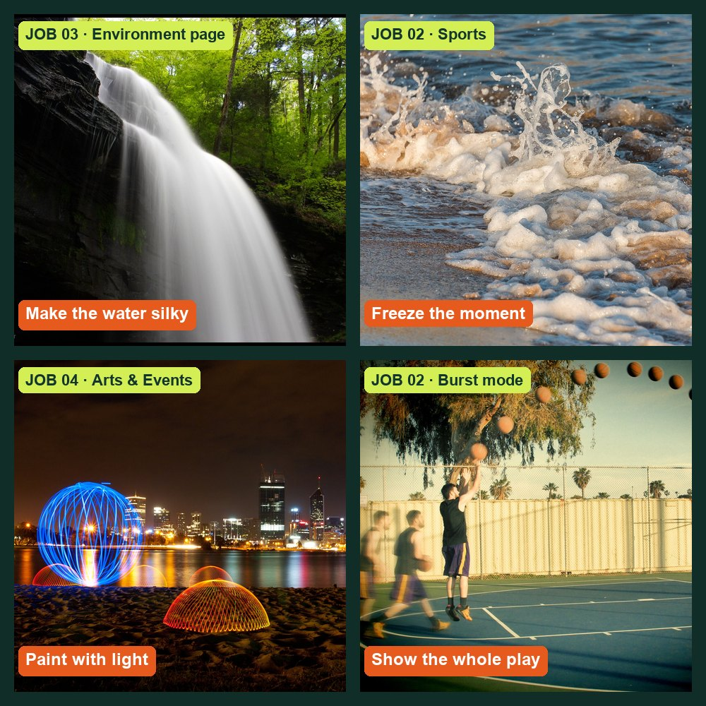
The kinds of shots the editors want (openly licensed example photos; credits in Sources). Yours will be taken at school.
Every lab is a Torch assignment.
Each job card comes from a Torch editor, with a constraint and a deliverable. Predict, shoot, prove. Your best work can run in the newsletter.
My supports
Turn on any help you want. Your teacher may have set some for you. They change how the guide helps, not what is assessed.
Newsroom brief
Welcome to The Torch photo desk.
The Torch needs photographers for features, sports, arts, the environment page and the news. Before you are sent on a real assignment, you work through the editors’ job board. Each job teaches one camera control by using it for a real purpose. You will predict what will happen, shoot it, and prove it with your own photos. Then Session D sends you on a real Torch assignment.
Shooting inside the school: rules
Ask before you enter another classroom, the gym, library or office, and before you borrow anything.
Photograph people only if they agree. Before any photo of an identifiable student is published, your teacher checks the school photo-permission list.
Never photograph in washrooms or change rooms, or anyone who asks you to stop.
No readable private information: screens, grades, names on lists, timetables.
When in doubt, shoot hands, backs, details and objects: they often tell the story better.
You will hand in
Lab log with a row for every job
Your photos for Jobs 01–09
Practical check photo and explanation
One filed photo in the Student OS gallery
Two Torch assignment photos with captions (Session D)
How the room works
Stations rotate. Share cameras; shoot your own frames. The long-exposure jobs (03, 04) need the darkest corner.
Help
Use the Coach to clarify terms in guided jobs. Not in the practical check.
Once a week, post one phone photo you took outside school to the Student OS discussion “Photo of the week”, name the job skill it uses, and comment on two classmates’ photos.
Industry connection
Real photographers make these choices on deadline.
Henri Cartier-Bresson called it the decisive moment: the instant everything in the frame comes together. P1 Getting it depends on knowing your camera so well that settings never slow you down. News photographers also sign up to a code of ethics: accurate captions, and no edits that mislead. E1
Short job-specific videos are linked in each job’s Method basis. Links checked 29 Sep 2026.
Knowledge first
Three controls. One trade-off at a time.
Aperture (f-number)
The lens opening. A small number (f/4) is a wide opening: more light and a blurry background. A large number (f/16) is a small opening: less light and more in focus.
Shutter speed
How long the sensor collects light. Fast (1/1000 s) freezes motion. Slow (1 s) records motion as blur, which is why long exposures need a tripod.
ISO
Sensor sensitivity. Raising it brightens the photo but adds grain (noise), mostly in dark areas.
Stops and the meter
Every control is measured in stops: one stop doubles or halves the light. The meter shows whether the camera thinks the photo is too dark or too bright. In manual mode you trade stops between controls to reach the exposure you want.
RAW and JPEG
RAW keeps the sensor’s full data for editing; JPEG is smaller and ready to share but has discarded data. Shoot RAW+JPEG when you might need to rescue a photo.
Primary achievement evidence: the practical check (step 10) and the safe camera/tripod observation. Job completion, predictions and supports are recorded separately from achievement.
This lab feeds each course’s Sprint 3 evidence: MM12 mm12-26-s03 (lesson d02, outcomes 1.1, 1.3) and COM11 com11-26-s03 (lessons d01–d02, outcomes 2.1–2.4). Approved rubrics: pending registration.
Every new Torch photographer starts the same way: handle the kit safely, then find out what the camera decides when you let it.
TODAYPass the safe-handling check (Level 1) and complete the mode hunt.
01
Read the job board and your licence
IN SHORTSet up your folders and log; know what each licence level needs.
READ ALOUD
DOCUMENT: This guide · lab-log.csv SELECT: The job board (header) and the licence levels below TOOLS / ROUTE: Read · plan your rotation
Read the newsroom brief and the school shooting rules in Start: you are a Torch photographer and each lab is a job card from an editor.
Read the three Camera Licence levels. Level 3 lets you sign a camera out on your own for projects.
Download the templates ZIP and open lab-log.csv. Every job gets one row: prediction, settings, result, evidence.
Find your station group and rotation on the board your teacher posts. Cameras are shared; each person still shoots their own frames.
Create a folder PhotoDesk_YourName with subfolders job01 to job09.
Level 1 · Safe handler
Safe routine and tripod set-up observed by your teacher (steps 2–3).
Level 2 · Priority modes
Jobs 01–05 completed with predictions, settings and evidence in your log.
Level 3 · Manual
Pass the practical check (step 10) on your own. Unlocks independent camera sign-out.
Licence levels are skill badges: they are awarded in Student OS only after your teacher confirms the evidence.
STEP CHECKLIST
GLOSSARY
Camera Licence: Three levels that show what you can do safely and independently with the camera
WHYKnowing the whole job list and what each level unlocks helps you plan your time and see why each skill matters.
CHECKYour folder and lab log are set up and you can name what Level 1, 2 and 3 each require.
FIXCan’t open the CSV? Upload it to Google Sheets or copy the column headings into a doc.
WORKED EXAMPLE · DIFFERENT OBJECTA student at another studio kept one row per job: “Job 03 · predicted silky water at 1 s · got 2 s at f/16 · water smooth, rocks sharp · photo IMG_0142”.
STRETCH (AFTER THE CHECK PASSES)Plan your rotation so the long-exposure job happens when the room is darkest.
02
Pass the safe-handling check
IN SHORTShow the full safe routine and tripod set-up to your teacher.
READ ALOUD
DOCUMENT: The class DSLR and tripod SELECT: Strap · battery and card doors · tripod clamps · plate TOOLS / ROUTE: Routine observed by your teacher
Strap on before lifting; two hands at all times. Check battery and card; clean the lens only with a blower or microfibre.
Set up the tripod: legs wide, thickest sections first, every clamp locked, centre column low.
Click the camera plate into the head and flip the lock lever closed. Keep one hand on the camera until it is locked. Check the bubble level.
Show your teacher the full routine, including taking the camera off safely.
Record “Level 1 observed” and the date in your lab log once your teacher confirms it.
STEP CHECKLIST
GLOSSARY
Quick-release plate: The plate on the camera that clicks into the tripod head
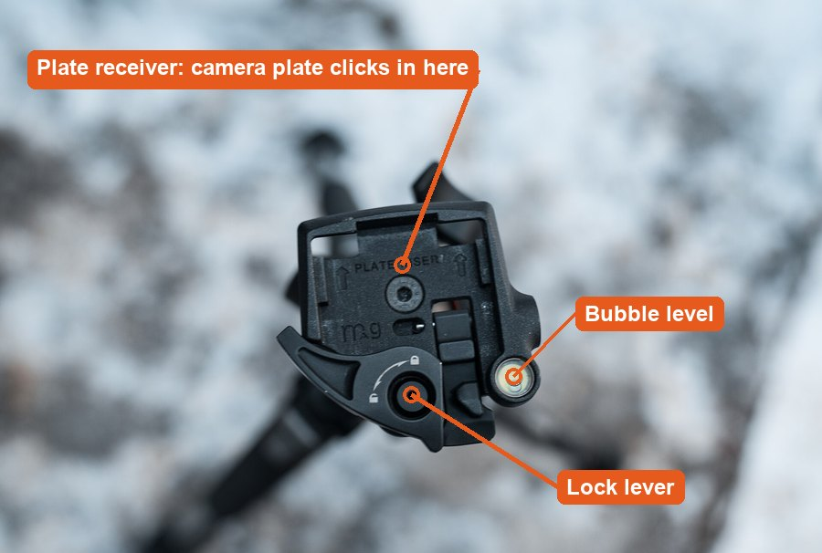
Real quick-release head: plate receiver, lock lever and bubble level.
WHYCameras are shared. One drop or an unlocked tripod can end a whole class’s project.
CHECKYour teacher has watched you complete the routine without reminders.
FIXPlate won’t lock? Turn it so the arrow points toward the lens. Tripod wobbles? Lower the centre column and spread the legs.
WORKED EXAMPLE · DIFFERENT OBJECTAt a real studio, new assistants are signed off on kit handling before they touch a client shoot.
STRETCH (AFTER THE CHECK PASSES)Coach a classmate through the routine without touching the camera yourself.
Method basis: N1. Values and sequence are authored for this project.
03
Mode hunt: what does the camera decide for you?
Predict first: before you shoot, write in your lab log what you think will change. After, prove it with your own photos.
IN SHORTShoot one scene in three modes and record what the camera chose.
READ ALOUD
DOCUMENT: job01 folder SELECT: Mode dial: Auto · Scene · P · Av · Tv · M TOOLS / ROUTE: Shoot one scene in three modes
Pick one scene with a person or object and a window.
Take one photo each in Auto (green), a Scene mode (Portrait or Sports) and P.
On playback press INFO until the settings show. Write down the f-number, shutter speed and ISO the camera chose for each.
Compare: which mode chose the widest aperture? The fastest shutter? Why?
Answer in your log: when would a photographer let the camera decide, and when not?
STEP CHECKLIST
GLOSSARY
Scene mode: A preset (portrait, sports) where the camera picks settings for that situation
P (Program): The camera picks aperture and shutter; you can still change ISO
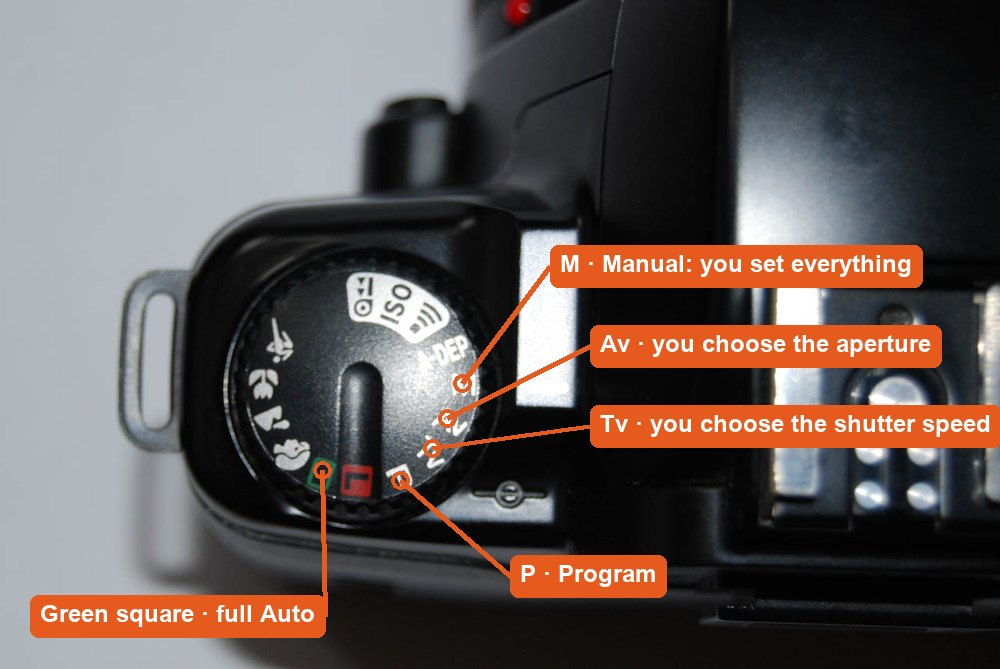
Real mode dial: Auto, Scene icons, P, Tv, Av and M.
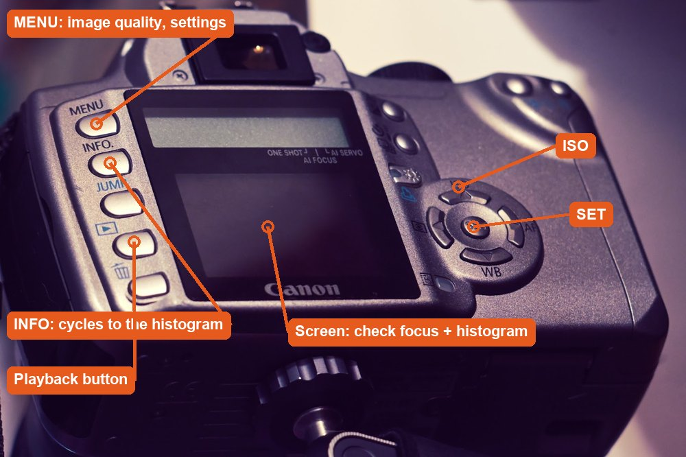
Real DSLR back: press INFO on playback to see the settings.
WHYAutomatic modes are not magic: each one is a set of choices. Seeing them helps you understand what to control yourself.
CHECKYour log lists the settings the camera chose in three modes and explains one difference.
FIXSettings don’t show on playback? Press INFO (Canon) or the up/down arrows (Nikon) repeatedly.
WORKED EXAMPLE · DIFFERENT OBJECTA student found Sports mode picked 1/800 s and ISO 1600 indoors, while Portrait picked f/4 and 1/60 s: two different priorities.
STRETCH (AFTER THE CHECK PASSES)Find the scene mode that would suit a photo of food, and check what it changes.
Method basis: V5. Values and sequence are authored for this project.
Session B · Lesson 2 · station rotation · COM11 com11-26-s03-d02 · MM12 mm12-26-s03-d02
Work the job board. Earn Level 2.
Five client jobs, one skill each. Rotate stations with your group; each person shoots and logs their own frames.
TODAYComplete Jobs 01–05 with a prediction, settings and evidence for each.
04
Job 01 · Museum catalogue: everything sharp
ClientThe Torch · Features editorBriefA story on the trophy case: photograph one trophy, medal or award up close.ConstraintEvery part of the object must be sharp.DeliverOne photo at the right f-stop + your ruler measurementsLicenceCounts toward Level 2
Predict first: before you shoot, write in your lab log what you think will change. After, prove it with your own photos.
IN SHORTFour apertures on a tripod, measure the sharp zone on a ruler.
READ ALOUD
DOCUMENT: job01 folder SELECT: Mode dial Av · main dial · tripod TOOLS / ROUTE: Av · f/4 → f/8 → f/13 → f/22 · ruler in frame
Borrow one trophy, medal or award (ask the office or coach first), or use any object 5–20 cm tall. Stand it on a desk or stool by a window, with a ruler lying beside it from front to back.
On the tripod, shoot at f/4, f/8, f/13 and f/22. Focus on the front of the object each time.
Zoom in on the ruler in each photo. Record how many centimetres of the ruler are sharp at each f-stop.
Take one handheld shot at f/22 and note what happens to sharpness.
In your log: which f-stop does the museum need, and what did it cost (shutter speed)?
STEP CHECKLIST
GLOSSARY
Aperture: The lens opening, shown as an f-number
Depth of field: How much of the scene is sharp from front to back
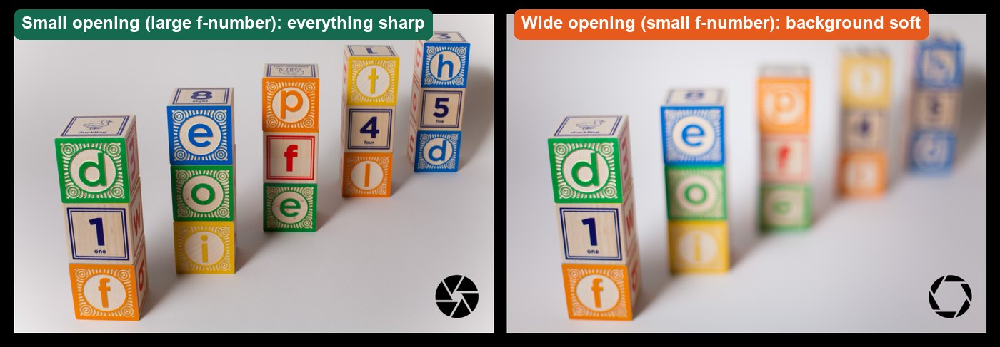
Real photos: small opening keeps everything sharp; wide opening softens the background.
WHYA catalogue photo must show the whole object sharp. The ruler turns “looks sharper” into a measurement.
CHECKYour log shows the sharp distance on the ruler for all four f-stops, and explains the handheld f/22 result.
FIXf/22 photo blurry on the tripod? Use the 2-second self-timer so pressing the button does not shake the camera.
WORKED EXAMPLE · DIFFERENT OBJECTDifferent object: a toy car at f/4 had 2 cm of sharp ruler; at f/16 it had 11 cm. The shutter slowed from 1/125 s to 1/8 s.
STRETCH (AFTER THE CHECK PASSES)Find the f-stop where sharpness starts to get worse again at f/22 (diffraction), and explain what you see.
Method basis: V2 · N1. Values and sequence are authored for this project.
05
Job 02 · Sports desk: freeze the play
ClientThe Torch · Sports editorBriefAction photo for the sports page (gym or hallway, with permission).ConstraintThe ball and hands must be sharp.DeliverThe best peak-moment frame + a slow-shutter comparisonLicenceCounts toward Level 2
Predict first: before you shoot, write in your lab log what you think will change. After, prove it with your own photos.
IN SHORTTv 1/1000 s in burst mode; compare with 1/60 s.
READ ALOUD
DOCUMENT: job02 folder SELECT: Mode dial Tv · main dial TOOLS / ROUTE: Tv · 1/1000 s · burst (continuous) drive mode
Go where you have permission to move: the gym (ask the PE teacher), or a hallway with space. Turn the mode dial to Tv (Canon) or S (Nikon). Set 1/1000 s.
Set the drive mode to continuous (burst) with the drive button. Ask your partner to toss a ball in the air or jump; stand 3–4 m away.
Hold the shutter down through the whole action. Pick the frame with the peak moment.
Repeat at 1/60 s. Compare the ball and hands in both.
If 1/1000 s is too dark, raise ISO and record the value.
STEP CHECKLIST
GLOSSARY
Shutter speed: How long the sensor collects light
Burst mode: The camera keeps shooting while you hold the button
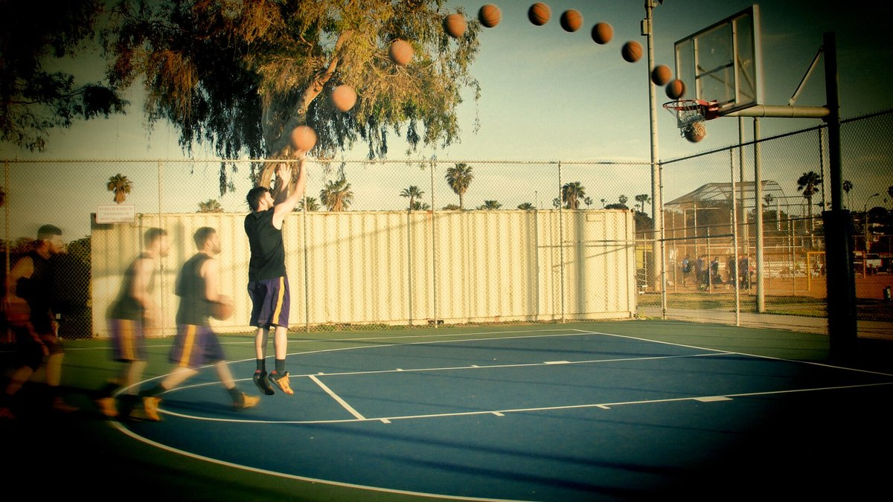
Real photo: many frames of one jump shot combined, showing the path of the ball.
WHYSports editors need the peak moment, sharp. A fast shutter freezes it; burst mode gives you choices.
CHECKOne frame where the ball is sharp at its peak, and a 1/60 s frame where it is blurred, both logged.
FIXPhotos too dark? Raise ISO to 1600–3200, or open the aperture. Missed the peak? Start the burst before the action.
WORKED EXAMPLE · DIFFERENT OBJECTA school photographer shooting a volleyball serve used 1/1250 s and ISO 3200 in the gym, and picked frame 7 of 12.
STRETCH (AFTER THE CHECK PASSES)Try panning: follow a moving subject at 1/30 s so it stays sharp and the background streaks.
Method basis: V3. Values and sequence are authored for this project.
06
Job 03 · Tourism board: make the water silky
ClientThe Torch · Environment pageBriefA calm image for a water-saving story: running water at a school sink or fountain.ConstraintThe water must look smooth; everything else sharp.DeliverOne long-exposure photo + a handheld comparisonLicenceCounts toward Level 2
Predict first: before you shoot, write in your lab log what you think will change. After, prove it with your own photos.
IN SHORTFour shutter speeds on a tripod at running water; compare with handheld.
READ ALOUD
DOCUMENT: job03 folder SELECT: Mode dial Tv · tripod · self-timer TOOLS / ROUTE: Tv · 1/400 s → 1/60 s → 1 s → 4 s
Set up the tripod at a classroom sink (art or science room, with permission) or the hallway water fountain. Turn the tap to a steady stream. Frame the water with something still beside it: the tap, tiles or a cup.
Shoot at 1/400 s, 1/60 s, 1 s and 4 s. Use the 2-second self-timer. If the long shots are too bright, set ISO 100 and f/16–f/22.
Compare the water and the still objects in each photo.
Take one 2-second shot handheld and compare.
In your log: which shutter speed makes the water silky while the rest stays sharp, and why does the tripod matter?
STEP CHECKLIST
GLOSSARY
Long exposure: A slow shutter speed that records movement over time
Self-timer: A delay so pressing the button doesn’t shake the camera
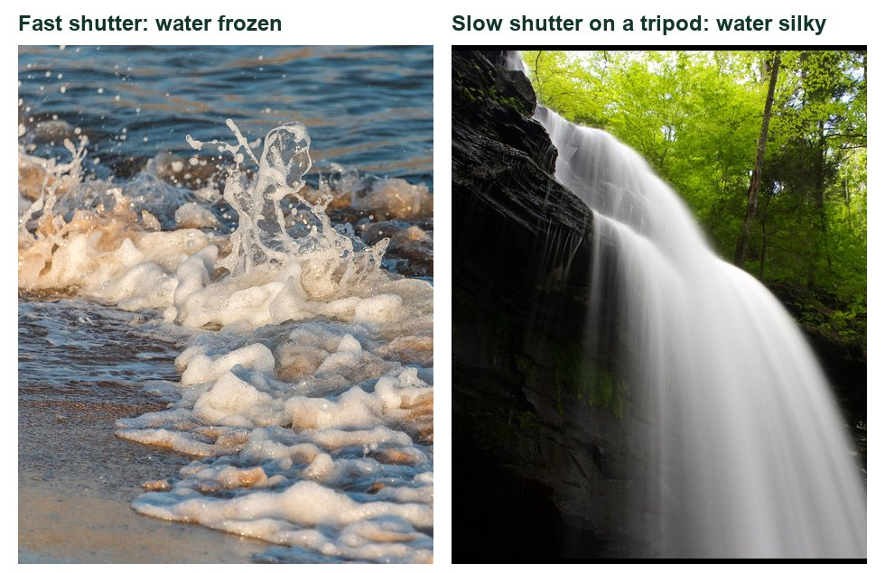
Real photos: fast shutter freezes water; a slow shutter on a tripod makes it silky.
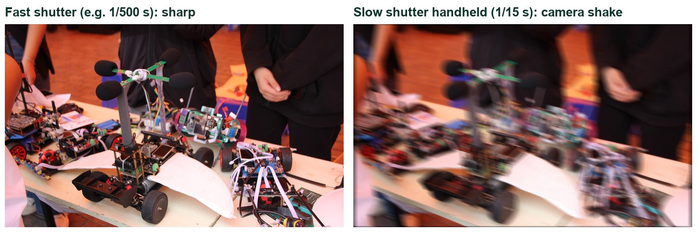
What handheld slow shutter does: everything blurs, not just the water.
WHYSilky water is a choice made with time. The tripod keeps everything else sharp, so the blur reads as motion, not a mistake.
CHECKA long-exposure frame where the water is smooth and the still objects are sharp, plus your handheld comparison.
FIXLong exposure all white? ISO 100, smallest aperture (f/22), and a darker spot. Everything blurred? Tripod locked and self-timer on.
WORKED EXAMPLE · DIFFERENT OBJECTDifferent scene: a school fountain at 1/500 s showed separate droplets; at 2 s on a tripod it became a smooth veil.
STRETCH (AFTER THE CHECK PASSES)Photograph the same water at 1/4000 s. What new detail appears?
Method basis: V3. Values and sequence are authored for this project.
07
Job 04 · Night market poster: paint with light
ClientThe Torch · Arts & EventsBriefA glowing poster image for an upcoming school arts night or coffeehouse.ConstraintMade only with light, in the dark.DeliverOne planned light painting + settingsLicenceCounts toward Level 2
IN SHORTDark room, tripod, 10 s in M mode, draw with a torch.
READ ALOUD
DOCUMENT: job04 folder SELECT: Mode dial M · tripod · dark room TOOLS / ROUTE: M · 10 s · f/8 · ISO 200 · manual focus
Use a classroom or storage room where the lights can go off and the blinds close (ask your teacher). Put the camera on the tripod. Stand your partner 2–3 m away, shine a torch on them, focus, then switch the lens to MF.
Set M mode: 10 s, f/8, ISO 200.
Press the shutter (self-timer on). Your partner draws a shape, word or outline in the air with a phone torch while the shutter is open.
Check the result. Too faint? Open to f/5.6. Background too bright? Darken the room or use f/11.
Plan one image for the night-market poster: a word, a shape around an object, or a light “orb”.
STEP CHECKLIST
GLOSSARY
Manual focus (MF): The lens switch that stops the camera refocusing
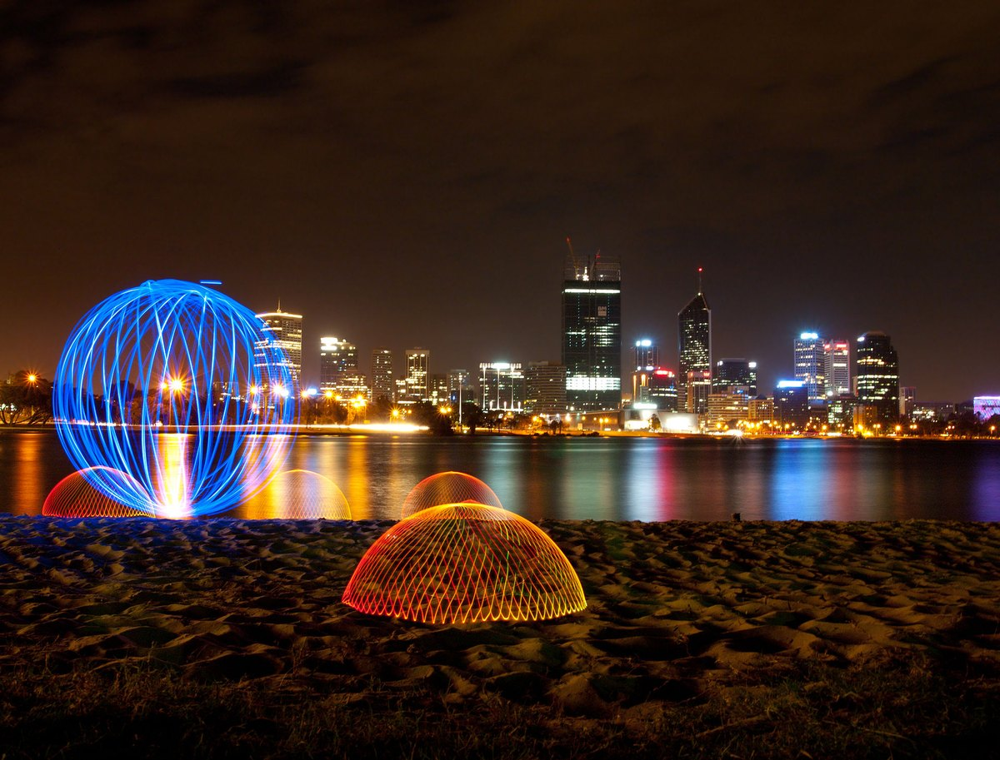
Real light painting: glowing shapes drawn with lights during a long exposure.
WHYA long exposure records anything that moves with light. Planning the drawing turns an effect into a poster idea.
CHECKOne light painting where the shape is clear and readable, with the settings logged.
FIXNothing shows? The torch must point at the camera. Writing reads backwards? Write mirror-image or turn it around in Photoshop.
WORKED EXAMPLE · DIFFERENT OBJECTDifferent poster: a student traced the outline of a bike with a torch at 15 s, f/8; the bike glowed while the room stayed dark.
STRETCH (AFTER THE CHECK PASSES)Combine two exposures of light painting in one Photoshop document with the Lighten blend mode.
08
Job 05 · Gym editor: noise or blur?
ClientThe Torch · Sports editorBriefIndoor photos where the light is poor (a dim gym or classroom).ConstraintNo flash allowed.DeliverYour ISO comparison + one justified choiceLicenceCounts toward Level 2
Predict first: before you shoot, write in your lab log what you think will change. After, prove it with your own photos.
IN SHORTISO series in dim and bright light; choose noise or blur and defend it.
READ ALOUD
DOCUMENT: job05 folder SELECT: Mode dial M or Av · ISO button TOOLS / ROUTE: Dim room: ISO 800 → max · bright hallway: ISO 100 → 6400
Dim room: a classroom with the lights off and blinds down. Shoot the same object at ISO 800, 3200, 6400 and your camera’s highest ISO. Keep the aperture the same.
Bright room: a hallway by the windows. Shoot at ISO 100, 200, 800 and 6400.
Zoom to 100% on a dark area of each photo and compare the grain.
Now decide for the gym editor: a moving subject in the dim room at ISO 6400 and 1/500 s, or ISO 400 and 1/30 s. Shoot both.
In your log: which would you send to the editor, and why? Use the words noise and motion blur.
STEP CHECKLIST
GLOSSARY
ISO: Sensor sensitivity: higher is brighter but grainier
Noise: Grainy speckles, strongest in dark areas
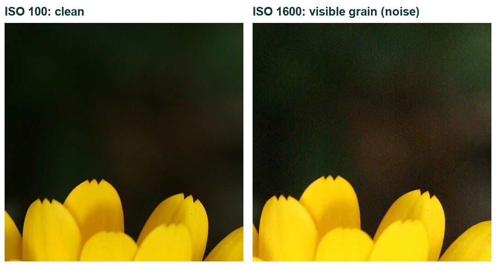
Real photos of the same flower at ISO 100 and ISO 1600: higher ISO adds grain.
WHYISO rescues dark scenes, but grain is the price. Real photographers choose between noise and blur every day.
CHECKYour 100% comparisons show grain rising with ISO, and your log defends one choice for the editor.
FIXCamera stops below 15000? Use its highest setting and record it. Grain hard to see? Zoom to 100% on a dark area.
WORKED EXAMPLE · DIFFERENT OBJECTA yearbook photographer chose ISO 6400 for a dim concert because a sharp, grainy face beat a smooth, blurred one.
STRETCH (AFTER THE CHECK PASSES)Find the highest ISO you would still accept for a printed yearbook page, and show why.
Method basis: V4. Values and sequence are authored for this project.
SIMULATION · Exposure Lab Open it after Jobs 01–05. Try all four challenge cards and compare with what your real camera did. Open Exposure Lab ↗ Back in your log: Which simulation result matched your real photos, and which surprised you? Works offline; nothing you do in it is collected.
Manual mode, one independent job, a RAW rescue, and filing a real photo with a caption and proof it is genuine.
TODAYSolve the exposure puzzle, pass the practical check, rescue a RAW file and file one photo.
09
Job 06 · Editor’s puzzle: two ways to the same exposure
ClientThe Torch · Photo editorBriefProve you understand manual exposure before you shoot a real job.ConstraintSame brightness, two different apertures.DeliverTwo matched exposures + your explanationLicenceToward Level 3
Predict first: before you shoot, write in your lab log what you think will change. After, prove it with your own photos.
IN SHORTIn M mode, reach meter 0 at f/4 and again at f/8; explain the trade.
READ ALOUD
DOCUMENT: job06 folder SELECT: Mode dial M · meter scale TOOLS / ROUTE: M · ISO 400 fixed · make the meter read 0 two ways
Set M mode and ISO 400. Point the camera at a lit object. Look at the meter scale (−2…0…+2) in the viewfinder.
Choose f/4. Turn the shutter dial until the meter reads 0. Write down the shutter speed. Shoot.
Now choose f/8 (two stops smaller). Find the shutter speed that brings the meter back to 0. Shoot.
Compare the two photos: brightness should match; depth of field should not.
Explain in your log why f/8 needed a shutter speed four times longer.
STEP CHECKLIST
GLOSSARY
Stop: A doubling or halving of light
Light meter: The scale that shows if the camera thinks the photo is too dark or too bright
Illustration: Each control changes brightness; one stop doubles or halves the light.
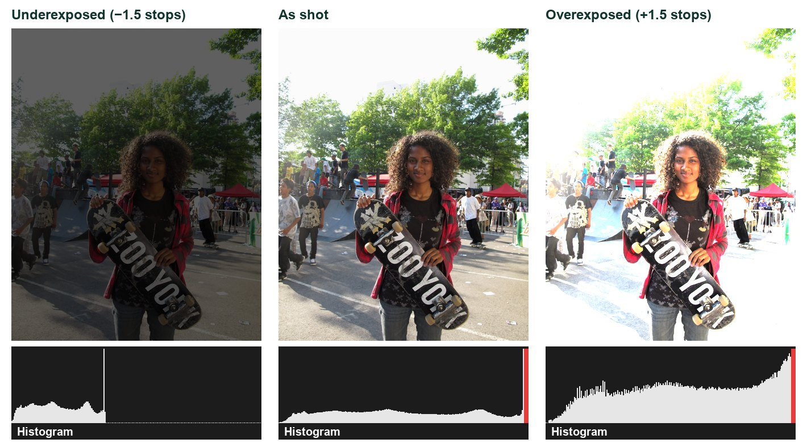
Why the meter matters: the same photo under-, well and over-exposed, with its histogram.
WHYUnderstanding stops is what manual mode is really about: you can trade one control for another and keep the same brightness.
CHECKTwo photos with matching brightness and different depth of field, and a correct explanation of the four-times rule.
FIXMeter not visible? Half-press the shutter to wake it. Can’t reach 0? Change ISO once and start again.
WORKED EXAMPLE · DIFFERENT OBJECTAt ISO 400: f/4 at 1/250 s and f/8 at 1/60 s both read 0. f/8 lets in a quarter of the light, so the shutter stays open four times as long.
STRETCH (AFTER THE CHECK PASSES)Find a third combination at f/16 and predict its shutter speed before you check.
Method basis: V1. Values and sequence are authored for this project.
10
Practical check: your challenge card
ClientThe Torch · Editor-in-chiefBriefA last-minute assignment with one hard constraint.ConstraintOn your own, in manual mode.DeliverOne photo that meets the card + your plan and explanationLicenceCompletes Level 3 when confirmed
IN SHORTSolve your challenge card in manual mode and explain your trade-off.
READ ALOUD
DOCUMENT: job07 folder SELECT: Your teacher’s challenge card TOOLS / ROUTE: M mode · your own decisions · no recipe
Read the conditions: work alone, M mode, 20 minutes, no Coach. Your camera handling counts.
Your teacher gives you a challenge card, for example: “Sharp runner, dim gym, max ISO 3200” · “Silky water with sharp rocks” · “Whole object sharp, one lamp” · “Freeze a pour of water”.
Plan your settings on paper first: aperture, shutter, ISO and why.
Shoot, check the histogram and focus, and adjust. Keep your first attempt.
Write your settings and explanation in the boxes below.
STEP CHECKLIST
GLOSSARY
Trade-off: Giving up one thing to get another
WHYThis is independent evidence that you can make exposure decisions yourself. It completes Level 3.
CHECKThe photo meets the card’s constraint, and your explanation names the trade-off you chose.
FIXStuck? Ask which control the card fixes, then balance the other two with the meter.
WORKED EXAMPLENone today: this is independent evidence. Use the success criteria.
STRETCH (AFTER THE CHECK PASSES)Draw a second card and solve it.
11
Job 08 · RAW rescue: bring back the window
ClientThe Torch · Photo editorBriefThe library photos all have blown-out windows behind the students.ConstraintYou may only use honest tonal corrections.DeliverRAW vs JPEG rescue comparisonLicenceToward Level 3
IN SHORTShoot RAW+JPEG against a bright window; rescue both; compare.
READ ALOUD
DOCUMENT: job08 folder · Photoshop (Camera Raw) SELECT: MENU › Image quality · the .CR2/.CR3/.NEF file TOOLS / ROUTE: RAW+JPEG · File › Open › Camera Raw · Highlights / Shadows
In MENU › Image quality, choose RAW+L (RAW plus large JPEG).
In the library or a classroom, photograph an object (or a classmate who agrees) in front of a bright window. Expose for the subject so the window turns very bright.
Open the RAW file in Photoshop: it opens in Camera Raw. Pull Highlights to −100 and raise Shadows. Watch the window.
Open the JPEG and try the same with Filter › Camera Raw Filter.
In your log: how much of the window did each file recover, and why?
STEP CHECKLIST
GLOSSARY
RAW: The camera’s unprocessed sensor data
JPEG: A compressed, processed image that discards data
Illustration: The Camera Raw Basic panel: Highlights and Shadows do the rescue.
WHYRAW keeps far more of what the sensor recorded, so bright and dark areas can often be recovered. A JPEG has already thrown much of that away.
CHECKTwo recovered versions side by side, and a log entry explaining why the RAW recovered more.
FIXRAW file won’t open? Update Camera Raw, or ask for the class DNG converter. No RAW option? Your teacher will supply a sample RAW file.
WORKED EXAMPLE · DIFFERENT OBJECTLast year’s RAW tutorial put it this way: RAW is like keeping the negative; a JPEG is someone else’s print of it.
STRETCH (AFTER THE CHECK PASSES)Recover a sunset sky in RAW without making it look fake. Where is the line?
Method basis: A2. Values and sequence are authored for this project.
Session D · Across the sprint · with permission · outside or during class as your teacher allows
On assignment for The Torch.
Now the real job. Choose two briefs from the editors’ board, find a real moment in the building, and file publishable photos with captions.
TODAYPick two briefs, get permission, shoot, edit honestly and file to The Torch.
12
Choose two briefs from the editors’ board
IN SHORTChoose two briefs and plan three shots for each.
READ ALOUD
DOCUMENT: The Torch brief board (below) SELECT: Two briefs TOOLS / ROUTE: Read · choose · plan
Read all eight briefs. Colour shows difficulty: green is straightforward, gold adds an interview, red needs extra care.
Choose two briefs. At least one should be gold or red if you are aiming for Extending.
For each brief, write in your log: the story in one sentence, where in the building it happens, and when.
List three possible shots per brief: one wide (the scene), one medium (the action), one detail (a telling object or hands).
Tell your teacher your two briefs before you start, so two students do not chase the same moment.
Brief
What the editor wants
Shot ideas
Camera skill
Add-on
01 · New Faces Straightforward
Grade 9s and new students finding their way in the first weeks.
Lockers, timetables, a student reading a room number, the first-day map. Shoot details or backs if faces are not cleared.
Job 01 depth of field on a detail; hallway leading lines.
One short quote: “What surprised you most about this school?”
02 · Club Spotlight Straightforward
One club or team that meets at lunch or after school.
The club in action: hands on a robot, chess pieces, sheet music, art supplies. Ask the club leader first.
Job 05 ISO for dim rooms; get close for detail.
Two quick facts: when it meets and how to join.
03 · Prices in the Cafeteria Straightforward
Everyday choices about food, money and time.
The price board, a tray, hands paying, the line. Keep faces mostly out of frame (last year’s finished example did this).
White balance for mixed cafeteria light (Job 08 RAW rescue helps).
Two prices and one sentence about what they show.
04 · Autumn in the Building Straightforward
The season inside school: displays, a food drive, spirit week.
Collection boxes filling up, a hallway display, decorations going up. Show change over time if you can.
One sentence of context: what, when, who it helps.
05 · Tryouts and Practice Adds an interview
Effort, nerves and teamwork at a practice.
Shoes on the gym floor, a coach’s whiteboard, a ball at the peak. Never publish disappointment without permission.
Job 02 fast shutter + burst; Job 05 high ISO in the gym.
One short quote from a player or coach (with permission).
06 · Behind the Scenes Adds an interview
The people who keep the school running: custodians, office, library, cafeteria staff.
A task in progress, tools of the job, an environmental portrait. Ask the person first and explain the story.
Job 08 windows behind people; side light from a window.
One quote: “What is one part of your job students never see?”
07 · AI in the Classroom Adds an interview
How students use technology to learn, balanced and honest.
A laptop beside a handwritten plan, hands on a keyboard, screen glow. No readable logins, names or chats.
Shoot from the side or behind; Job 05 for screen-lit rooms.
One quote or two ideas: “What is one responsible way to use AI for school?”
08 · Remembrance Needs care and respect
Preparations for the Remembrance Day assembly, handled respectfully.
Poppies, a wreath, a display, hands arranging chairs. Quiet, respectful, no staged emotion. Check with your teacher before shooting.
Job 01 shallow focus on a poppy; natural window light.
One sentence of context about the assembly.
STEP CHECKLIST
GLOSSARY
Brief: An editor’s short description of the story and what the photo must show
Photojournalism: Telling true stories with photographs
WHYA photojournalist works from a brief: the story comes first, then the pictures that tell it.
CHECKTwo briefs chosen and approved, each with a one-sentence story, a location, a time and three planned shots.
FIXNo idea where the story is? Walk the building at lunch and notice what is happening. Stories find you.
WORKED EXAMPLE · DIFFERENT OBJECTLast year’s student chose “Prices in the Cafeteria”, planned the price board, a tray and hands paying, and kept faces out of frame.
STRETCH (AFTER THE CHECK PASSES)Pitch your own brief to the editor (your teacher) with a one-line story and why readers would care.
Method basis: P1. Values and sequence are authored for this project.
13
Get permission and protect privacy
IN SHORTAsk the room owner, ask the person, record it, check the list, protect privacy.
READ ALOUD
DOCUMENT: source-and-consent-log.csv SELECT: Everyone identifiable · every location TOOLS / ROUTE: Ask · record · check the permission list
Ask the staff member in charge before shooting in their room (gym, library, office, cafeteria).
Explain the story to anyone you photograph and ask if they agree. Record their agreement in the consent log.
Give the list of identifiable people to your teacher, who checks the school photo-permission list before anything is published.
Plan privacy-safe alternatives: hands, backs, silhouettes, details, over-the-shoulder shots.
Check the frame for private information (screens, grades, names on lists) before you shoot.
STEP CHECKLIST
GLOSSARY
Consent: Clear permission from the person photographed
Identifiable: A person who could be recognised from the photo
WHYThe Torch reaches families and the community. Consent and privacy protect the people in your photos and the paper’s trust.
CHECKEvery identifiable person has agreed and is on your list for teacher checking; every location has been approved.
FIXSomeone says no? Thank them and shoot a detail instead. A readable screen? Change your angle or shoot from behind.
WORKED EXAMPLE · DIFFERENT OBJECTA student shooting “AI in the Classroom” photographed from behind the student so the screen and face were not readable.
STRETCH (AFTER THE CHECK PASSES)Write a short privacy note for the editor explaining how you protected people in your photos.
Method basis: E1. Values and sequence are authored for this project.
14
Shoot on assignment
IN SHORTWide, medium and detail; burst for the key moment; check as you go.
READ ALOUD
DOCUMENT: torch folder SELECT: The camera settings each moment needs TOOLS / ROUTE: Wide · medium · detail · burst at the key moment
Arrive before the moment happens and let people get used to you.
Shoot a wide, a medium and a detail for each brief. Use the job skill each needs (fast shutter for sport, high ISO for dim rooms, depth of field for details).
For action or reactions, use burst mode and wait for the peak: the decisive moment.
Check focus and the histogram as you go; reshoot problems on the spot.
Copy everything to your folder; never delete in camera.
STEP CHECKLIST
GLOSSARY
Decisive moment: The instant when everything in the frame comes together
WHYReal moments cannot be repeated, so you prepare the camera before they happen.
CHECKFor each brief you have a wide, a medium and a detail, and at least one frame you would send to the editor.
FIXMoment missed? Stay: similar moments usually happen again. Everything posed? Wait until people forget the camera.
WORKED EXAMPLE · DIFFERENT OBJECTAt a club meeting a student waited until the robot finally moved and caught three hands reaching for it at once.
STRETCH (AFTER THE CHECK PASSES)Tell the story in three photos: one to set the scene, one for the action, one for the detail.
Method basis: P1. Values and sequence are authored for this project.
15
Edit honestly and add Content Credentials
IN SHORTHonest adjustments only, log them, enable Content Credentials, export.
READ ALOUD
DOCUMENT: Your selects · Photoshop (Camera Raw) SELECT: Your best frame for each brief TOOLS / ROUTE: Camera Raw · Window › Content Credentials · Export As
Choose one best frame per brief. Open it in Camera Raw (a RAW file opens there directly; a JPEG via Filter › Camera Raw Filter).
Make only honest adjustments: crop, straighten, exposure, contrast, white balance, highlights, shadows, a little sharpening.
Record every adjustment in an edit log, as last year’s finished example did.
Choose Window › Content Credentials and Enable Content Credentials.
Export with File › Export › Export As, JPG, long edge 3000 px where possible, named Torch_Brief01_LastName.jpg.
STEP CHECKLIST
GLOSSARY
Content Credentials: Provenance data attached to an image showing how it was made and edited
Edit log: A list of every adjustment you made
Illustration: Export As settings for filing (left); Image Size is only needed for print (right).
WHYNews photos must show what happened. Honest edits and Content Credentials let readers trust the image.
CHECKTwo exported JPGs with Content Credentials, and an edit log with only allowed adjustments.
FIXContent Credentials missing in your Photoshop version? Keep the edit log and tell your teacher. Tempted to remove something? Don’t: reshoot or crop instead.
WORKED EXAMPLE · DIFFERENT OBJECTLast year’s log: cropped slightly left, raised exposure, added a little contrast, fixed yellow white balance, added texture. Nothing added or removed.
STRETCH (AFTER THE CHECK PASSES)Show your editor a before/after and explain why each change keeps the photo truthful.
Method basis: E1 · A1 · A2. Values and sequence are authored for this project.
16
Write the caption and file to The Torch
IN SHORTCaption, add-on, alt text, gallery post, logs to the editor.
READ ALOUD
DOCUMENT: caption-template.txt · Student OS SELECT: Your two exported photos TOOLS / ROUTE: Caption (5W) · add-on · alt text · file
Write a two-sentence caption for each photo: who, what, where, when in the first sentence; why it matters in the second.
Add the brief’s add-on: the short quote, two facts or context sentence.
Write one sentence of alt text for each photo.
Post both photos with captions, add-ons and alt text to the Student OS class gallery (share with class).
Hand in your consent log and edit log. The editor (your teacher) chooses photos for the next issue of The Torch.
STEP CHECKLIST
GLOSSARY
Caption (5W): Who, what, where, when, why
Alt text: A written description of an image for people who cannot see it
WHYA photo without an accurate caption is not journalism. The add-on gives readers the context the picture cannot.
CHECKTwo filed photos, each with an accurate 5W caption, an add-on, alt text, a consent record and an edit log.
FIXCaption reads like an opinion? Stick to facts you saw or were told. Quote unclear? Check it with the person.
WORKED EXAMPLE · DIFFERENT OBJECTLast year’s caption: “A student checks the cafeteria price list before paying for lunch during the midday rush…” It states what happened, then why it matters.
STRETCH (AFTER THE CHECK PASSES)Find a published news photo caption and label its 5Ws. Which W is missing?
Method basis: E1. Values and sequence are authored for this project.
Before you submit
Student QA.
Evidence conversation
Keep it short and specific.
SENTENCE FRAMESI predicted ___, but my photos showed ___ because ___. · I chose ___ over ___, which cost me ___. · The RAW file recovered more because ___.
Ricketts Glen State Park - Flickr - jasonb42882.jpg · Jason · CC BY 2.0 · source. Processed as stated in each caption.
Light painting gnangarra-1.jpg · Gnangarra · CC BY 2.5 au · source. Processed as stated in each caption.
Jump Shot (147812777).jpeg · Devon Boutte · CC BY 3.0 · source. Processed as stated in each caption.
The Splash (19330706893).jpg · Chris Combe from York, UK · CC BY 2.0 · source. Processed as stated in each caption.
Figures marked Illustration are drawn, not screenshots. Step values are starting points authored for this project. Draft for teacher review; not yet classroom-piloted.